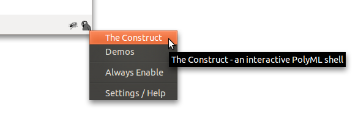
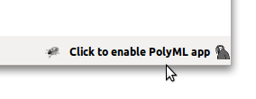

Content Table
Installing
To use the PolyML Extension you'll need to install PolyML and the extension itself.
After you've done that, you can check if it's working by opening up Firefox, right clicking the extension icon in the bottom right corner of the browser and clicking "The Construct" item in the menu.
By default, PolyML Extension is disabled, therefore if the page contains Standard ML code the "Click to enable PolyML app" label will appear in the status bar. Clicking it will execute the Standard ML program contained in the document. You can override this setting by turning the "Always Enable" option in the context menu as seen above or in the settings page.
Quick Intro
The Icon
In the bottom right corner, you can see the PolyMLext icon.
 |
Click this to activate the PolyML Console for an active tab. It will only open the console for pages that contain PolyML code. In another pages clicking this icon will not do anything. Presence of PolyML code on the page is indicated by a label "PolyML app" to the left of this icon. Right clicking this icon will provide you with a context menu with useful links. |
 |
This means that Console is activated. Clicking this icon will toggle the visibility of the console. Clicking "Disable" in the Console will deactivate the console and the icon will turn gray again. As with the gray icon, right clicking will provide you with the context menu. |
 |
This indicates that PolyML was not found on the computer. Clicking it will display the settings page where you customize the custom PolyML path or get instructions on installing PolyML. |
Click To Enable
By default the extension is always disabled and has to be enabled each site by clicking "Click to enable PolyML" in the bottom right corner of the browser. If open another site in the same tab or reload the tab, you will not be asked for confirmation anymore.
The Construct
In the context menu of the extension (which is opened by clicking the PolyMLext icon), you'll see "The Construct" button. This will take you to an empty html document with enabled PolyML, where you can try out different things. It's kind of like opening poly in the terminal for quick experiments.
Console
Console is an interactive top level PolyML shell. It corresponds to the opened document. Try opening up the console right now and enter:
DOM.setStyle (valOf (DOM.getElementById "container")) "background" "orange"